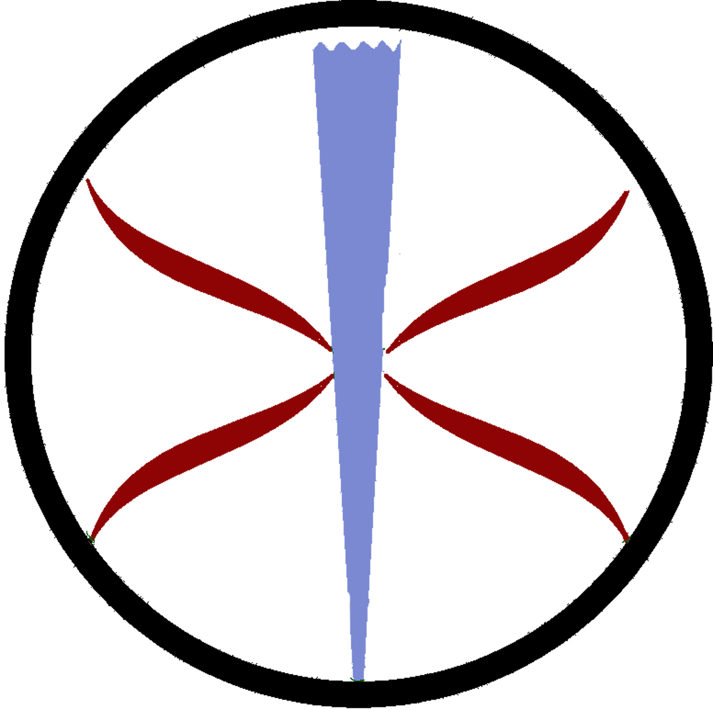
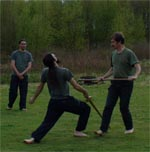

Links
HomeAbout
Find Local Clubs
Join
Events
Contact Us
Blogs
Fall '06 Stáv Weekend Blog
Stáv Blog (Miki)
Products
CafePress Shop
Books/Memberships/Etc
Links
Ice and Fire UK
Stáv-International
Stáv, alive and well in the USA
Ice and Fire USA is based out of the Washington DC metropolitan area. We offer basic trainings free at several events and a semi-annual training intensive with Graham Butcher.
Ice and Fire USA's primary function is to train and support stav practicioners and instructors throughout the USA. Ice and Fire insures its instructors, offers a private email list for all members, coordinates with Ice and Fire UK and offers a semi-annual magazine of articles written by the members both in the US and the UK. Ice and Fire USA is a private company and all efforts are supported by membership dues. Join Today
Ice and Fire USA sponsors stav clubs in several locations along the eastern seaboard. Visit our groups page for more information and to get links to the club websites. Visit our events page to sign up for our trainings and events.
If you are interested in donating to Ice and Fire USA but not interested in training or joining the group, please visit our web store to donate.
What's New on the website
 